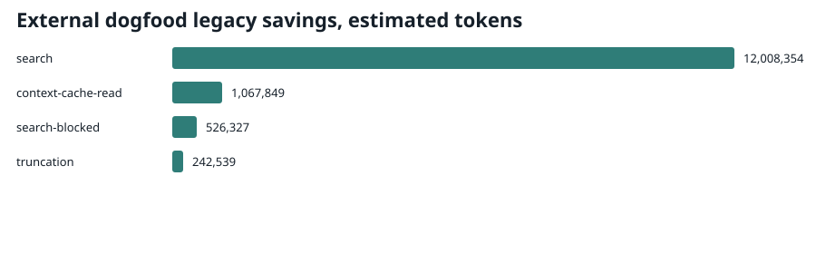

Telemetry
Savings and budget events are local-only by default; public docs use checked-in aggregates.
What Users See
The report below is the actual shipped HTML interface rendered with sanitized example events. It keeps measured removals separate from optimistic upper-bound estimates so users cannot accidentally add unlike claims.
Representative values only. The interface and labels come from the shipped renderer; no private local telemetry is published.
Generate Your Local Report
The HTML stats view is generated locally from the active savings log. Claude writes .claude/state/savings.html; the Codex shim writes .less_tokens/state/savings.html.
.claude/bin/python .claude/tools/stats.py --html
.less_tokens/bin/python .less_tokens/tools/stats.py --htmlRenderer source: .claude/tools/stats.py. The Codex command is a shim around the same reporting contract.
External Dogfood Snapshot

Source: eb_telemetry_9jul26.md